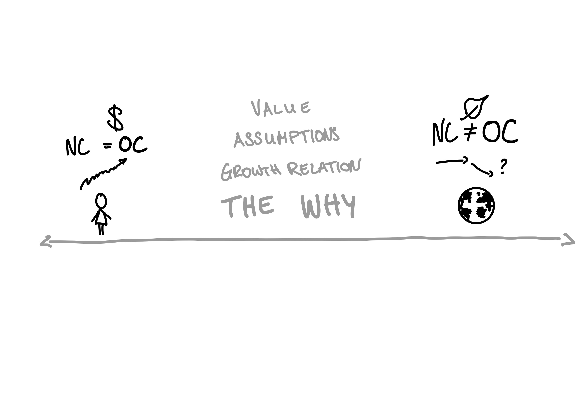

2 Sustainability: Concepts, Technology, Innovation
Lecture Notes
These notes accompany the lecture “Sustainability: Concepts, Technology, Innovation” held at Lund University on November 29th, 2022. You can find the slides at the bottom of this text.
This lecture aims to explore what sustainability means for innovation. Taking a social science perspective, we will discuss issues of directionality, power, and agency in defining sustainability transitions.
The required reading for this class is Garud and Gehman (2012). When reading think about how the different perspectives presented relate to innovation systems and innovation policy. What do you think about the compatibility of different theories?
Further recommended readings are Geels (2010), Holmgren et al. (2022), Parks (2022), Grillitsch et al. (2019). Please keep in mind that you should not aim to read all the papers, rather they were chosen to represent current thinking of sustainability in (European) sustainability transition research. When reading any of them, think about how they relate to the different ideas of sustainability in Garud and Gehman (2012). Is one idea over-represented? If so, why do you think this is the case? Do you see any problems with it?
- Know different dimensions of sustainability and their implications
- Know how these dimensions interact with innovation
- Know how to approach sustainability assessment of innovation
3 What Does Sustainability Mean for Innovation?
In the previous lecture we discussed different ways in which innovation is involved in sustainability transitions. We have discussed more descriptive approaches to think about this question, such as the informal ice-berg heuristic and the well established Multi-level perspective. We have also discussed more normative approaches such as Mission Oriented Innovation Policy and begun discussing why we have to take the normative dimension seriously in innovation for sustainability.
In this lecture, we are going to look more in depth at why and how to account for normative complexity in sustainability transitions and what that implies for innovation. We will first introduce some key concepts, hopefully you have already encountered them, so that we only need to do a short refresher. Then we will use these to discuss what innovation is sustainable, or rather under what circumstances it is and for whom.
At the end, you can find an introduction to my own research project, to see one example of how these topics enter the transition to the bioeconomy.
3.1 Materials for Natural Science Insights
This lecture focuses on how to approach sustainability topics. It does not engage with the natural science basis of environmental sustainability. That literature can be overwhelming. A good starting point are the reports prepared for policy makers by consortia of leading global experts.
The UN provides regular updates about the state of our planet. These reports are the result of collaboration by hundreds of scientists from across the world. Since the topics are often very complex, the reports are published in different versions for different audiences. The Intergovernmental Panel on Climate Change (IPCC) is perhaps the best known example (website). But reports also exist for biodiversity, or specific biomes such as forests.
For a more approachable reading, have a look at Kimberly Nicholas’ book Under the Sky We Make (2021).
3.2 Sustainability Dimensions
Sustainability as a concept is not the outcome of scientific research. Instead, it is grounded in ethics and has no single true solution (Michelsen et al. 2016). Of course this does not mean that scientific research has nothing to add to sustainability, far from it! Natural science, the humanities, social sciences, all have important contributions to furthering our understanding and pursuit of sustainability. That is why it is important to critically engage with the concept from various angles.
Humans have for a very long time thought about sustainability and how to behave in a way that is compatible with nature. In a Western context, the German Hans Carl von Carlowitz, is often credited for popularizing the term “nachhaltende Nutzung” (enduring, or sustainable usage), of forests in the 1713 work Sylvicultura Oeconomica. He argued that foresters should only remove as many trees a year as reach maturity in the same year (Michelsen et al. 2016).
Remember that the idea, to only use as much from nature as it can restore, has been a central imperative of many cultures and traditions, long before German forest owners implemented the idea for their property. This already points to an important aspect of sustainability. The concept of sustainability has been developed, adopted and adapted, sometimes even forgotten, by people in different places and different times. In the Anthropocene Rockström et al. (2009) argue, humans need to develop a novel type of sustainability knowledge. With human activity affecting the Earth System at a planetary scale, some scientist articulate the need for humanity to become planetary stewards. On a sub-planetary scale, many Indigenous people have long been recognized as exceptional stewards of ecosystems. This highlights that knowledge about sustainable human nature interaction has existed outside of Western knowledge sets for much longer than 300 years. Bridging Indigenous knowledge with Western knowledge sets is a difficult challenge which lays bare many core issues of sustainability (Johnson et al. 2016), some of which we will discuss in this lecture.
With the UN conferences in Stockholm, 1972, and Rio de Janiero, 1992, the increased public attention on environmental harm fully arrived in the the global political arena (Michelsen et al. 2016). Already at the Stockholm conference, different visions of sustainable development became apparent. While representatives of the Global North were concerned with environmental pollution of industrial activity, members of the Global South raised the importance of social and economic development (Michelsen et al. 2016).
3.2.1 Sustainable Development
Sustainable development is development that meets the needs of the present without compromising the ability of future generations to meet their own needs. (Environment and Development 1987).
This quote is probably familiar to you already. It does a good job at highlighting the intra- and inter-generational nature of sustainability. But it has also been criticized on various grounds. Among theme is the focus on human needs alone, along with remaining questions what needs are in the first place. In the context of this lecture, it points us to a central question: how do we determine the needs of present and future generations? The assumptions we make in answering this question play a substantial role in how we assess technology, innovation and (economic) development.
The needs of present and future generations are often thought of as falling into the three dimensions discussed at the above.
The environment, society and the economy are the three dimensions of sustainability. But they are frequently given different priority. Figure 3.1 shows three ways in which the dimensions can be organized. The first being an equal representation as pillars upon which the concept sustainability lays. The second representation, sometimes dubbed the “Mickey Mouse Model” due to its resemblance to the characters head shape, places economic aspects at the center, while environmental and social considerations take on the role of smaller add-ons. Lastly, the nested model places economic aspects within social aspects within environmental aspects. The argument being that without a natural environment there is no society without which there is no economy.
These representations can also be spotted in connection with the SDG. Figure 3.2 shows the SDG organized as equal blocks and as a nested model, where economic goals sit inside social goals inside ecological goals. Such representation may seem arbitrary, but the mental models we make of our world can be hugely influential in our way of navigating the world. And a model does not necessarily have to be a formalized set of mathematical equations!


For an interesting discussion of this have a look at this conversation between Kate Raworth and Herman Daly.
3.2.2 Weak and Strong Sustainability
Assigning sustainability dimensions different importance does not only come into play in the figures above. How we “order” the importance of different dimensions is a crucial departure point for any analysis. It determines what we direct our attention to, how we engage with it and the type of conclusions we draw based on the research. The nested model corresponds to a notion of strong sustainability, while the pillars and mickey mouse model representation correspond to weak notions of sustainability. The primary difference between weak and strong sustainability is the question what should be preserved in the long run.
Weak sustainability maintains that it is total capital which should be preserved. Total capital is the sum of human made and natural capital, including natural resources, both cultivated (e.g., forests, or farmland) and uncultivated (e.g., air), manufactured, human, social and knowledge capital (Michelsen et al. 2016). Within total capital, everything is substitutable. What matters is that the utility between different forms remains the same. That means that a natural lake can not only be replaced by a swimming pool, but that this may even be the best thing to do, if the total welfare provided by the swimming pool is larger than that of the lake (Michelsen et al. 2016).
The fact that sustainability is an inter- and intra-generational concept, with teleconnections (i.e., activity at one location affects other locations) and multi scale impacts, makes it crucial what assumptions underlie our thinking. The assumptions of weak sustainability cloud important questions which arise from sustainability being an ethically grounded concept. Who decides what the value of a forest is? The people selling its timber? The people dependent on hunting its game? Those who benefit from its regulating services, such as protection against soil erosion or flood? Or those who have a cultural tie to the specific forest?
Strong sustainability on the other hand, maintains that it is not possible to substitute natural capital. Natural capital is only rarely interchangeable with other forms of capital. Some would even argue that the idea of substitutability is wrong in the first place (Michelsen et al. 2016). This means that even within strong sustainability, there may be disagreement. Returning to the lake example, strong sustainability advocates would agree that replacing a lake with a swimming pool is not sustainable. But for some restoring wetlands at a different site could be considered as an option. Others would disagree with this as a “solution” on the basis that the lake has an inherent value, irrespective of humans, which will be lost together with the lake. These issues are pertinent in many current sustainability debates (e.g., Swedish forestry in Northern Sweden).
Therefore, while weak and strong sustainability are often portrayed as distinct categories, it seems sensible to think of these concepts as a continuos spectrum (Figure 3.3, compare with the table in Michelsen et al. (2016) p. 19).
It follows that the concepts do not only differ in regards to their assumptions about the nature of capital and on the question what ought to be preserved in the long run, but also on worldviews. While weak sustainability places humans at the center of “the why”, strong sustainability questions the anthropocentrism and holds obligations to nature as a key motive.

For a through critique of weak sustainability, have a look at Ott (2019).
3.3 Sustainable Technology
When thinking about the sustainability of individual technologies, the fact that sustainability is a multi-facetted topic makes assessment very challenging.
García-Granero, Piedra-Muñoz, and Galdeano-Gómez (2018) review the literature on eco-innovation. From their review they compile a list of eco-innovation types across four dimensions: product, process, organizational, and marketing.
Exactly what an eco-innovation is, is difficult to define. But two aspects emerge as common ground:
“…fewer adverse effects on the environment and more efficient use of resources” (García-Granero, Piedra-Muñoz, and Galdeano-Gómez 2018, 305).
| Product | |
|---|---|
| 101 | Use new cleaner material or new input with lower environmental impact |
| 102 | Use of recycled materials |
| 103 | Reduction / optimization of raw material use |
| 104 | Component number reduction |
| 105 | Elimination of dirty components |
| 106 | Longer life cycle products |
| 107 | Recyclability of product |
| Process | |
| 201 | Reduce Chemical Waste |
| 202 | Reduce Use of Water |
| 203 | Reduce Use of Energy |
| 204 | Keep waste to a minimum |
| 205 | Reuse of components |
| 206 | Recycle waste, water or materials |
| 207 | Environmental-friendly technologies |
| 208 | R&D |
| 209 | Acquisition of machinery and software |
| 210 | Acquisition of patents and licenses |
| Organizational | |
| 301 | Green human resources |
| 302 | Pollution prevention plans |
| 303 | Environmental objectives |
| 304 | Environmental audit |
| 305 | Environmental advisory |
| 306 | Invest in research |
| 307 | Cooperation with stakeholders |
| 308 | New markets |
| 309 | New systems (remanufacturing systems and transport systems) |
| Marketing | |
| 401 | Returnable/reusable packaging |
| 402 | Green design packaging |
| 403 | Quality certifications |
But eco-innovation are not necessarily sustainable. Beemsterboer and Kemp (2016) argue that assessing the sustainability of technology can be approached as a yard stick, examining the impact a technology has on sustainability criteria. But as the concept of sustainability requires normative choices of what we value, we should not label technology as sustainable or unsustainable. Let us try to unpack why that might be the case.
First, recall that the different dimensions of sustainability can also help us in our approach to sustainability issues. Assessing the sustainability of technology, for example, can be done from the vantage point of the environment. We can ask questions such as “what is the impact on the local ecosystem in which this technology will be used compared to alternative technology?”, but we can also ask social questions such as, “what is the impact of this technology on different recipients of services from the ecosystem?”.
In other words, technology assessment is always depended on the context in which it is used.
3.3.1 Overview of Assessment Approaches
Treating the many approaches to technology assessment in this lecture is impossible. Instead, this section focuses on discussing ways to approach assessment tools. What should researchers, policy makers, and other consumers and producers of sustainability assessments be aware of?
Beemsterboer and Kemp (2016, 73) have compiled an overview of different assessment methods with points of departure into relevant literature for each.
Broadly speaking, they review technology assessment in regards to three goals. The first is to objectify the impact of a technology. This is frequently done using methods to quantify a specific aspect of the technology. The second is to uncover different perspectives of a technologies impact. Are different groups affected differently by it? Lastly, the impact of technology is coproduced with human activity. This means that it can be difficult to know on beforehand what the effects of a technology will be. For this Beemsterboer and Kemp (2016) provide the helpful example of a fridge. While fridges can help keep food fresh for longer, they may end up increasing the amount of food that goes to waste.
3.3.1.1 Quantification and Objectification
Both the biophysical and the socio-economic effects of a technology can be assessed in a quantified manner.
For example, where it is possible to accurately include all relevant costs and benefits, a Cost-Benefit Analysis (CBA) can guide policy makers on the optimal course of action. On many sustainability topics, however, it is at the very least extremely challenging to correctly identify and value (in monetary terms) costs and benefits (Ekins 2000).
Another example of methods aimed to help in the quantification of technology is Life-Cycle Assessment (LCA). The goal of this method is to compare the environmental effects of products and services across the entire product life; from extraction of raw materials to final disposal of the technology. Here too can the results lead to highly contested debates. Beemsterboer and Kemp (2016) report an example where a technology performs better in regards to CO2 emissions over its life cycle, but worse in regards to human toxicity.
This is not to say that methods that aim to quantify the effects of technologies are not useful or helpful. But relying on such methods can harm efforts to inform debates more than it aids. Different stakeholders may value some outcomes of technology differently from one-another. And this does not yet consider arguments about the inherent value of nature into consideration.
3.3.2 Scenario and Dialogue Methods
Attempts to include multiple perspectives can be an alternative to those methods attempting to objectify impact. For example, when monetary valuation of technological effects are difficult or impossible to obtain different scenarios can be developed both quantitatively and qualitatively and discussed among relevant stakeholders.
Such process, however, can quickly become complex as more and more perspectives are being included (Beemsterboer and Kemp 2016). At the same time, they do not guarantee that the outcome will be less contested. Beemsterboer and Kemp (2016) treat this issue more deeply and are worth a read if you are interested in this topic.
3.3.3 The Method Is Never Neutral
The fact that sustainability is a multifaceted issue, requires any credible attempt to measure progress towards sustainability to account for these differences (Diaz-Balteiro, González-Pachón, and Romero 2017). The tools we choose to assess the impact, or sustainability of a tool necessarily require us to make choices. Choices about what to measure, how to measure, when and where to draw the boundaries etc. These choices are rarely the outcomes of theoretical considerations, but rather influenced by budget, and / or knowledge constraints (Gasparatos and Scolobig 2012).
Some authors, such as Saltelli et al. (2020) extend the thought and propose that we need to accept this fact and instead of searching for the perfect tool, make use of different perspectives to critically examine insights derived from methods. In addition to several lenses that may help in this task, here are six rules presented in a previous paper (Saltelli et al. 2013) that may help you in examining the use of mathematical methods.
Rule 1: ‘Check against rhetorical use of mathematical modelling’; are results being over-interpreted? Is the model being used ritually or rhetorically?
Rule 2: ‘Adopt an “assumption hunting” attitude’; this would focus on unearthing possibly implicit assumptions.
Rule 3: ‘Detect pseudo-science’; this asks whether uncertainty has been downplayed, as discussed above, in order to present results in a more favourable light.
Rule 4: ‘Find sensitive assumptions before these find you’; this is a reminder that before publishing results the analysis of sensitivity should be done and made accessible to researchers.
Rule 5: ‘Aim for transparency’. This rule echoes present debates on open data, and of the need for a third party to be able to replicate a given analysis.
Rule 6: ‘Do the right sums’; the analysis should not solve the wrong problem – doing the right sums is more important than doing the sums right. This rule is about asking whether the given quantification is not neglecting important alternative ways to frame a given example.
Rule 7: ‘Focus the analysis on the key question answered by the model, exploring holistically the entire space of the assumptions’. (Saltelli et al. 2020, 91).
3.4 Sustainable Innovation
Apart from challenges to measure the impact of a technology, we also need to question the role of technology in sustainable innovation. Many visions for a sustainable future hinge on technological innovation. The most extreme are perhaps thoughts of geo-engineering, that is using technology to influence the atmosphere of planet Earth, or even terra-forming (e.g., creating a live sustaining atmosphere on) Mars.
While carbon direct capture technology plays a role in climate mitigation efforts, it is is generally agreed that technology or command-control innovation is insufficient to address sustainable development questions. The solutions we need require extensive collective learning processes, with continuos adaptation over long periods (Wiek and Lang 2016). The fact that many environmental issues are becoming increasingly urgent may call into question if such long learning processes are acceptable. For a recent working paper that explore the question of incremental and radical innovation for urgent social challenges, have a look at Laatsit (2022), from CIRCLE here at Lund University.
3.5 Summary
Sustainability is a wicked problem (Wanzenböck et al. 2020). This does not mean that there are no solutions to it. But it does mean that solutions are not easily identified, or simple yes or no constructs. Sustainability requires that we discuss, deliberate, explain and meet others, not once, but constantly. The fact that many sustainability issues are globally connected, operate at different scales and across different times certainly does not make it easier.
Technological change certainly is part of the answer(s). But there is reason to be cautious towards narratives of magic bullet technology. The effects of technology are difficult to assess and require us to be mindful of explicit and implicit assumptions, uncertainties and other methodological caveats which may cloud rather than clear our decision making.
How do we know if we have found a solution? Sustainability has a history of being easily defined as the antonmy of undesirable outcomes for humanity (Michelsen et al. 2016). The opposite of sustainability is collapse. While perhaps omitting that building a sustainable future, by definition, aims to create better lives, this negative definition may also help us in situations where it is difficult to explicate what is sustainable. Often it is easier to identify what is unsustainable. The aforementioned 1992 Earth Summit in Rio formulated the precautionary principle this way:
Where there are threats of serious or irreversible damage, lack of full scientific certainty shall not be used as a reason for postponing cost-effective measures to prevent environmental degradation. (United Nations 1992).
The burden to proof whether or not something is sustainable falls on those who propose that it is. This does not only apply to technologies but to other innovations too. In this lecture we covered different ways to acknowledge the normative dimension in thinking about technology and innovation. As you go on to deeply understand and use (some) of these methods, keep a critical stance. Once you learn how to use a hammer, you are tempted to think of every problem as a nail.
Initially the plan was to discuss a concrete example of the bioeconomy in this lecture. The focus changed while preparing the notes. But since it was teasered in the lecture module on Canvas, you find an excerpt of my research plan below.
3.6 Sweden’s Transition to a Forest Bioeconomy
3.6.1 Background
3.6.1.1 Planetary Stewardship
Humanity’s success in adapting to the physical environment puts this very success at risk. We have begun to alter the self-regulating cycles which have provided the stable conditions under which modern societies were able to emerge (Steffen et al. 2011). Our impact on the Earth System is so severe that it threatens to irreversibly changing the state of the Earth System (Steffen et al. 2018). The term Earth System refers to an integrated systems view of earth compromising physical, chemical, biological and human components, and their complex and dynamic interactions (Steffen et al. 2020).
Stability in the Earth System is upheld through regulating biophysical processes (Steffen et al. 2015). They indicate a safe operating space for humanity and reflect early warnings that a system state changing threshold might soon be reached (Steffen et al. 2015). Climate change, stratospheric ozone depletion, ocean acidification, atmospheric aerosol loading, land-system change, freshwater use, biochemical flows, biosphere integrity, and novel entities, these are the planetary boundaries. Since the 1950s, in a period dubbed the Great Acceleration, pressure on the planetary boundaries has increased dramatically (Steffen et al. 2011). Two of these boundaries are capable of changing earth system states by themselves: climate change and biosphere integrity (Steffen et al. 2015).
3.6.1.2 Forests Hightlight Tradeoffs Inherent in Stewardship
Ensuring that planetary boundaries are not transgressed, requires that humanity becomes the steward of our planet (Steffen et al. 2011). Stewardship must include managing Earth’s systems at their various levels in a sustainable manner. Ecosystems, are functional units formed by dynamic and complex interactions between their parts (Millennium Ecosystem Assessment 2005). Like the Earth System at large, ecosystems provide services on which every living being on this planet depends on (Millennium Ecosystem Assessment 2005). Ecosystem services are the benefits ecosystems provide to people and are categorized into four main categories: 1. supporting services, 2. cultural services, 3. regulating services, and 4. provisional services (Millennium Ecosystem Assessment 2005, 40).
Intervening in an ecosystem is often characterized by trade-offs between different services. Increased provision of wood mass, for example, might limit the extent to which a forest can regulate the water cycle (Himes, Puettmann, and Muraca 2020). Additionally, trade-offs exist also between ecosystems, for example, a more intensely used plantation forest might prevent land-use intensity changes in agricultural or natural forest ecosystems (Himes, Puettmann, and Muraca 2020). For Nordic forests, these trade-offs result in what Högbom et al. (2021) call a trilemma: how to balance biodiversity, climate change mitigation services and increased demand for forest biomass?
Making decisions about these trade-offs is complicated as many services lack easy measures (Millennium Ecosystem Assessment 2005). Some services, such as the provision of materials, on the other hand are easily evaluated. With 80% of Swedish forests subjected to commercial forestry, provisional services are an important factor of the Swedish economy. Genetic and ornamental resources, biochemicals and inputs to (natural) medicines, fresh water, food, fiber and fuel had a total production value of 21.4 billion SEK (2.4 % of GNP) (Hansen and Malmaeus 2016, 5). It is important to keep in mind that ease of measuring service values does automatically make these services necessarily more valuable.
New use-cases for forest biomass will increase the pressure on land covered by forests. For example, in a recent paper, Mishra et al. (2022) argue that it would be possible to house 90% of the new urban population by 2100 in wood based buildings. This would save 106 Gt of additional CO2, but increase demand for plantation and natural forest timber. And still, meeting these goals with the available land, without compromising other ecosystem services is challenging. The economic, social and conservation demand for forests in Sweden has been estimated to be 2 to 4 times the currently available land area (Svensson, Neumann, et al. 2020). This pressure is especially pronounced in Northern Sweden where competing interests increase the pressure on forest and society (Svensson et al. 2012). Northern Sweden, along with areas in Finland and Russia, is home to Europe’s last remaining intact forest landscape and high in ecological value (Svensson, Bubnicki, et al. 2020).
3.6.1.2.0.1 Bioeconomy, Bioeconomics – Different Concepts, Different Visions
An idea which is bound to increase the pressure and trade-offs between different ecosystem services is the bioeconomy. In recent years the concept has gained relevance among policymakers, practitioners and researchers. The term bioeconomy refers broadly to an economy which uses bio-based inputs instead of fossil based ones. Connected to this are hopes of increased resource efficiency and renewability. In a report commissioned by the Swedish Government, the Swedish Research and Innovation Strategy for a Bio-Based Economy. (2012) defines a vision of a Swedish bioeconomy based on two central pillars. It is to be an economy based on,
[a] sustainable production of biomass to enable increased use within a number of different sectors of society. The objective is to reduce climate effects and the use of fossil-based raw materials.
With,
[a]n increased added value for biomass materials, concomitant with a reduction in energy consumption and recovery of nutrients and energy as additional end products. The objective is to optimize the value and contribution of ecosystem services to the economy. (p. 9).
These pillars reflect the two most influential visions the bioeconomy concept. Notions of a bio-technology and bio-resource oriented bioeconomy are widespread and dominate discourse at various levels (Dieken et al. 2021). Despite – or perhaps because of – the bioeconomy lacking a strong definition, it is used to refer to different concepts, with different aims and objectives, foci, normative assumptions and hence implications for society and environment (Bugge, Hansen, and Klitkou 2016).
The bio-technology vision focuses on economic growth and job provision through the application of bio-technology (Bugge, Hansen, and Klitkou 2016). Science driven innovation features prominently in this vision, with collaborations between research institutions in academia and industry taking on an important role (Bugge, Hansen, and Klitkou 2016). Vivien et al. (2019) present a review of the concept showing that the focus on science as an absolute motor of change also shaped policy recommendations, driven especially by the OECD, towards increasing the speed and diffusion of innovation through partnerships between new start-ups and establish pharmaceutical companies. As a policy narrative this vision was particularly potent and widespread at the turn of the 21st century. According to them, the intellectual heritage of Schumpeter and Kontradieff play an important role in this vision. Technological breakthroughs are poised to solve economic and ecological challenges, for example through genetic engineering. Consequently, this vision has a weak sustainability notion, viewing sustainability challenges as temporary and nature as substitutable given sufficient research and knowledge creation (Vivien et al. 2019).
In more recent years, visions of a bio-resource bioeconomy have taken over as the leading narrative. Unlike the bio-technology vision, this conceptualization does not only focus on economic growth and job creation, but attempts to include ecological sustainability challenges (Bugge, Hansen, and Klitkou 2016). Biological resources, not technologies, form the basis of a new economy. In essence, there are two ways in which bio-resources are poised to replace fossil resources: as substitution, e.g., bio-fuels replacing fossil fuels, and as high value added products, e.g., Cross-laminated Timber used as a concrete alternative in construction (Vivien et al. 2019). To substitute fossil resources requires significant efforts in innovation. In contrast to the bio-technology vision, however, innovation is not confined to scientific advances from a narrow biochemical and pharmaceutical field. Instead, new and old actors are required to collaborate between and beyond established sectors (Bugge, Hansen, and Klitkou 2016). Although sustainability plays a more important role in this vision of the bioeconomy, this vision is considered an example of weak sustainability (D’Amato et al. 2017; Vivien et al. 2019). The reason is the focus of substitution and high biomass demands. The consumption of raw materials may even increase, not only for bio-based, but also for fossil-based resources (Asada et al. 2020).
The exact role played by forests in a bioeconomy transition depends on the desired vision (Kleinschmit et al. 2014). There is no doubt that the Swedish vision places high demands on forests as primary providers of the required biomass. Both in the strategy formulated in Swedish Research and Innovation Strategy for a Bio-Based Economy. (2012) and in public discourse, a small, well-connected group of actors center the bio-resource vision as legitimate and desirable (Holmgren et al. 2022). The result is a forest sector which operates under a “more of everything” paradigm (Beland Lindahl et al. 2015).
3.6.1.2.0.2 Innovation for a Bioeconomy
Apart from the substitution of fossil resources through bio-based resources, a central narrative used in the Swedish transition is that, “[t]echnological innovation is key to a greener future” (Holmgren et al. 2022, 42). According to Jankovský et al. (2021) four types of innovation are central for a forest based bioeconomy:
- Substitute Products,
- New (bio-based) Processes,
- New (bio-based) Products,
- New Behavior.
Currently, most research into bioeconomy innovation relies on patent data or qualitative case studies (e.g., Bennich et al. 2021; Jander and Grundmann 2019). Unfortunately, these approaches are not without their flaws. Focusing on patents could overestimate the importance of the bio-technology vision, whose science oriented innovation approach is driven by patents (Bugge, Hansen, and Klitkou 2016). Qualitative case studies, on the other hand, may miss broader trends and features of a bioeconomy transition.
The need to capture innovation from a different angle than patents becomes even more urgent when taking the third vision for a bioeconomy into account. Ecological economists refer to it as bioeconomics (Allain et al. 2022), while Bugge, Hansen, and Klitkou (2016) list it as the bio-ecology vision. In contrast to the two visions already discussed, this vision prioritizes ecological sustainability over economic interests. The aim is an economy which is compatible with the biosphere (Vivien et al. 2019) and conserves ecosystems (Bugge, Hansen, and Klitkou 2016). Vivien et al. (2019) argue that it is therefore incompatible with the other two bioeconomy visions. Central to this stance is the pessimism that the currently dominating bioeconomy visions are continuations of an extractive industrial regime based on false believes regarding the feasibility of substitution and decoupling (Allain et al. 2022). After reviewing the dominant bioeconomy visions and their criticisms, Allain et al. (2022) argue that the debate should take a constructive turn by considering emerging research opportunities.
That is what I am doing with my research. If you are interested, you can check out my research plan at this link